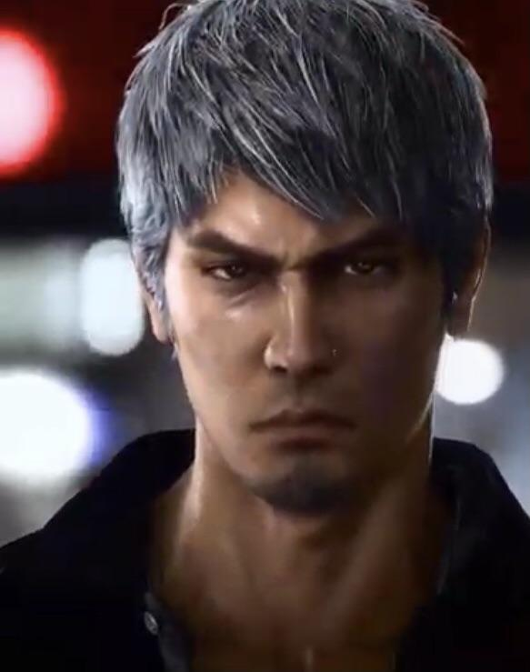

Kiryu Kazuma is the protagonist from the Saga, Like a Dragon, known in the west as Yakuza. In the latest game reveal, Kiryu has silver hair. Did he decide to persue a Kpop path?

Kazuma Kiryu (桐生 一馬, Kiryū Kazuma) is one of the protagonists of the Yakuza series. He is featured as the protagonist and playable character in Yakuza/Yakuza Kiwami, Yakuza 2/Yakuza Kiwami 2, Yakuza 3, Yakuza 6 and Like a Dragon Gaiden: The Man Who Erased His Name, and is one of multiple protagonists in Yakuza 0, Yakuza 4, Yakuza 5 and Like a Dragon 8. He also appears as a supporting character in Yakuza: Like a Dragon.Back to Kiryu
| Games | Year | |
|---|---|---|
| Yakuza 0 | Yakuza | Yakuza 2 |